Since Gama and Nguyen’s influential study [2], the Root Hermite Factor (RHF) has served as the standard scoreboard for comparing lattice basis reduction algorithms. Every major empirical evaluation of BKZ, its variants, and competing algorithms reports RHF as the primary quality metric. Security estimates for lattice-based cryptographic schemes, including the NIST post-quantum standard ML-KEM, rely on predictions of achievable RHF to set parameter sizes.
We pose a simple question: is RHF actually capturing everything that matters about a reduced basis?
We answer in the negative. By comparing standard BKZ against self-dual BKZ (SD-BKZ) [5] using the Li–Nguyen Rankin profile distance d(LN) — a metric derived from the dynamical systems analysis of BKZ [4] — we show that SD-BKZ produces bases that are measurably and consistently closer to the theoretical fixed point predicted by Li and Nguyen. This structural improvement is entirely invisible to RHF: across more than 4,500 completed seeds, the mean RHF difference between the two algorithms is below 10−6 in every group without outlier seeds, while d(LN) reveals advantages of 0.1–1.3 nats (natural log units) with win rates of 90–100%.
This is not a paper about SD-BKZ being “better” than BKZ in an absolute sense — it is approximately 2.5× slower. Rather, it makes two contributions. First, it demonstrates that the metric the community uses to evaluate reduction quality is incomplete: RHF cannot distinguish between two algorithms that produce structurally different bases. Second, by measuring that structural difference at scale, it reveals a rich phenomenology — non-monotonic dimension scaling, block-size-dependent peaks, and a sharp β = 40 cliff — that is entirely invisible to RHF and that has never been empirically characterised.
White [7] explored dynamic block size strategies within the Li–Nguyen framework, motivating the question of whether the Rankin profile distance could serve as a more discriminating benchmark than RHF for comparing reduction algorithm variants. The present work pursues that question directly.
Table 1. The same experiment yields opposite conclusions depending on the metric.
| Evaluation metric | Conclusion drawn |
|---|---|
| RHF only | No significant difference. SD-BKZ offers no advantage over BKZ for the additional runtime cost. |
| d(LN) | SD-BKZ produces structurally superior bases in >95% of trials. The improvement is in the interior basis structure, invisible to the first vector length. |
Our contributions are:
(1) A demonstration that RHF is structurally blind to the difference between BKZ and SD-BKZ output bases, despite a consistent and statistically significant gap in Rankin profile quality.
(2) The first empirical application of the Li–Nguyen d(LN) metric as a scalar convergence benchmark for lattice reduction, enabling paired statistical comparison between algorithm variants.
(3) A large-scale, multi-seed comparison of SD-BKZ versus BKZ on LWE-Kannan embedding lattices, building on Micciancio and Walter’s [5] original 10-instance evaluation with more than 4,500 statistically independent trials.
(4) Discovery of a non-monotonic scaling pattern governed by three interacting factors: block size, lattice dimension, and convergence depth. The peak dimension is block-size-dependent: β = 20 peaks at n = 90 (0.48 nats), β = 30 peaks at n = 100 (1.35 nats), β = 40 peaks at n = 110 (1.16 nats). All three block sizes eventually decline into negative territory, where the backward pass is actively harmful. At β = 40, n = 120, the advantage is negative despite a favourable β/n ratio, revealing convergence depth as a third governing parameter.
(5) Structural evidence that the SD-BKZ advantage is a capability difference, not a speed difference: BKZ given 3× the standard tour budget cannot close the gap at β = 30 (0/400 seeds across four dimensions), while at β = 20 the gap partially closes (Section 5.3). A spatial decomposition shows the improvement concentrates in the middle third of the Rankin profile, consistent with the backward pass providing optimisation pressure from a direction standard BKZ cannot reach (Section 5.4).
The BKZ algorithm [6] performs lattice basis reduction by sliding a window of size β over the Gram–Schmidt orthogonalisation, calling an SVP oracle within each local block, and updating the basis. One complete pass constitutes a “tour.” BKZ 2.0 [1] added practical improvements including pruned enumeration and recursive preprocessing; these are incorporated in modern implementations including fplll.
SD-BKZ [5] augments each forward tour with a backward pass on the reversed dual basis. This can be understood as: (1) run a forward BKZ tour, (2) compute the reversed dual basis, (3) repeat. The backward pass improves the interior structure of the basis — particularly the middle portion of the Gram–Schmidt profile, which the forward-only pass is slowest to reach. In fplll, SD-BKZ is activated via the BKZ.SD_VARIANT flag, which implements Algorithm 6 of [5]. Both variants share the same SVP oracle and preprocessing; the only difference is the additional backward pass. For an accessible introduction to the dynamical systems perspective on SD-BKZ, see Walter’s blog series at the Simons Institute [W20].
Albrecht et al. [8] exploited the predicted geometry of SD-BKZ-reduced bases — specifically, that the initial Gram–Schmidt norms more closely follow Schnorr’s Geometric Series Assumption — to achieve faster enumeration. Their work takes the theoretical SD-BKZ geometry as a given; the present work provides the first large-scale empirical confirmation that this geometric improvement is real and consistent.
Li and Nguyen [4] provided a complete dynamical systems analysis of BKZ, building on the earlier framework of Hanrot, Pujol and Stehlé [3], proving convergence to a unique fixed-point Rankin profile. The Rankin profile of a basis with Gram–Schmidt log-norms ln||b*i|| is:
where d is the dimension over which the profile is computed. For LWE-Kannan embedding lattices with m = 2n samples, the full lattice dimension is 3n + 1, but the first 2n basis vectors correspond to the sample structure; BKZ reduction acts meaningfully only on the remaining n + 1 vectors (the “active block” containing the secret/error embedding). We compute the Rankin profile and d(LN) over this active block (d = n + 1), which is standard practice for LWE-Kannan lattices. The fixed-point profile R* is determined by β and d via a closed-form expression combining the GSA slope with the Hermite bound offset (Li–Nguyen Equation 2). We define the convergence distance:
where the distance is measured in nats (natural logarithm units), following from the use of ln in the Rankin profile definition. We use the L1/n (mean absolute error) norm rather than L2 or L∞ because it weights all positions in the profile equally, avoiding undue sensitivity to a single large deviation at one index (as L∞ would) or quadratic amplification of outlier positions (as L2 would). Lower d(LN) indicates a basis closer to the fixed point. The advantage is defined as d(LN)BKZ − d(LN)SD-BKZ; positive values indicate SD-BKZ is closer. We measure distance to the BKZ fixed point for both algorithms; this choice and its implications are discussed in Section 7.4.
Profile-based analysis of BKZ is well established: the Chen–Nguyen BKZ simulator [1] predicts Gram–Schmidt profiles heuristically, Yu and Ducas [10] studied second-order statistical behaviour of GS log-norm profiles, and Ducas [16] exploited profile shape to obtain “dimensions for free” in sieving-based SVP solving. The d(LN) metric captures the full Rankin profile shape, including deviations at both the head and tail of the basis — such as the “head concavity” phenomenon characterised by Bai, Stehlé and Wen [9], where the first few Gram–Schmidt norms are shorter than the Chen–Nguyen simulator predicts. Our contribution is not profile-based analysis per se, but operationalising the Li–Nguyen fixed point as a single scalar convergence benchmark, enabling paired statistical comparison between algorithm variants at scale.
The Root Hermite Factor δ = (||b1|| / vol(L)1/d)1/d is a scalar metric that depends only on the length of the shortest basis vector relative to the lattice volume. Our implementation stores the uprooted Hermite Factor HF = δd and converts only at report time (since RHF = HF1/d, a monotone transformation, either metric ranks algorithms identically).‡ It captures nothing about the interior structure of the basis; the Gram–Schmidt vectors b*2 through b*d are invisible to it. As we demonstrate, this makes it fundamentally unable to detect the type of structural improvement SD-BKZ provides.
‡ Our implementation computes the Hermite Factor (without the outer 1/d exponent); since RHF = HF1/d is a monotone transformation, the conclusions hold for both metrics.
The most recent published empirical comparison of SD-BKZ against BKZ is [5], which used 10 instances. We extend this by a factor of 400×, running more than 4,500 independent trials across a systematic parameter grid (3,300 in the main sweep plus verification and extended-tour experiments). This scale enables statistical inference — confidence intervals, effect sizes, per-seed distributions — that is impossible with 10 instances. Multi-seed statistical benchmarking of BKZ at this scale is rare in the literature; no prior study has combined SD-BKZ with the Li–Nguyen Rankin profile metric.
We generate LWE instances with secret dimension n and modulus q = 97. The small modulus is a deliberate choice: it keeps lattice entries small and individual reductions fast (minutes to hours rather than days), enabling the large seed count necessary for statistical analysis. We acknowledge this is far from cryptographic moduli (e.g., q = 3329 for ML-KEM); testing at least one parameter group at a larger q would strengthen generalisability. A 20-seed verification group at q = 3329 (the ML-KEM modulus) at n = 50, β = 30 produced a mean advantage of 0.437 nats (std 0.143, 100% win rate, Cohen’s d = 3.06, p = 2.8 × 10−11), consistent with the q = 97 results (0.405 nats). A two-sample t-test found no significant difference between the two moduli (p = 0.37). Additional verification at n = 70 and n = 80 (20 seeds each, β = 30, 100% win) confirmed the effect holds across dimensions. At n = 100, a larger verification revealed a numerical instability in fplll’s GSO computation (Section 8). The sample dimension is m = 2n, and the Kannan embedding produces a lattice of dimension d = m + n + 1 = 3n + 1. For each (n, β, seed) triple, both BKZ and SD-BKZ are run on the same initial lattice generated from a fixed random seed, ensuring pairwise comparison.
Dimensions: n ∈ {50, 60, 70, 80, 90, 100, 110, 120, 130, 140, 150}. Block sizes: β ∈ {20, 30, 40}. Seeds: 100 per (n, β) pair. Total: 3,300 runs. Tours per reduction: 50 (β = 20), 70 (β = 30), 100 (β = 40). MPFR precision: 250 bits.
All reductions use fplll [11] 5.5.0 via fpylll [12] 0.6.4. Standard BKZ uses BKZ.MAX_LOOPS | BKZ.AUTO_ABORT. SD-BKZ adds BKZ.SD_VARIANT. No custom reduction code is used; both variants call the same fplll C++ library with the same SVP oracle and preprocessing. BKZ 2.0 features (recursive preprocessing) are included in fplll and are present in both variants. The d(LN) metric has been verified to machine precision (float64) against a second, independently written implementation by the author.
Early exit occurs when the mean absolute Rankin profile change between consecutive tours falls below 10−6. In practice, this condition was triggered in only 1 of 6,600 algorithm runs (a single BKZ run at n = 50, β = 20). All other runs reached the tour limit, confirming that all pairwise comparisons occur at identical tour counts. This also implies the reported d(LN) advantages are conservative: both algorithms are still improving at the tour limit, and since SD-BKZ improves faster, additional tours would be expected to widen rather than narrow the gap.
SD-BKZ is consistently slower than BKZ due to the additional backward pass. Table 2 reports mean wall-clock runtimes for all complete 100-seed groups. The ratio ranges from 2.72× (n = 70, β = 30) to 2.00× (n = 140, β = 20), with a systematic compression at higher dimensions: the overhead drops from ~2.6× at n = 50–90 to ~2.0–2.4× at n = 120–150. This overhead is important context for the capability analysis in Section 5.3: at n = 50, β = 30, SD-BKZ at 70 tours costs approximately 1,486 seconds while BKZ at 210 tours costs approximately 1,695 seconds (3 × 565), so BKZ receives 14% more compute and still cannot close the gap. At higher dimensions where the ratio compresses toward 2.0×, the compute advantage for BKZ@3x grows further.
Table 2. Mean wall-clock runtime per seed (seconds) for complete 100-seed groups. Single-core fpylll on q = 97 LWE-Kannan instances.
| n | β | BKZ (s) | SD-BKZ (s) | Ratio |
|---|---|---|---|---|
| 50 | 20 | 188 | 426 | 2.26× |
| 50 | 30 | 565 | 1,486 | 2.63× |
| 50 | 40 | 2,940 | 7,445 | 2.53× |
| 60 | 20 | 286 | 662 | 2.31× |
| 60 | 30 | 660 | 1,750 | 2.65× |
| 60 | 40 | 2,302 | 6,027 | 2.62× |
| 70 | 20 | 211 | 492 | 2.33× |
| 70 | 30 | 663 | 1,802 | 2.72× |
| 70 | 40 | 3,048 | 8,094 | 2.66× |
| 80 | 20 | 294 | 679 | 2.31× |
| 80 | 30 | 878 | 2,380 | 2.71× |
| 80 | 40 | 3,529 | 9,288 | 2.63× |
| 90 | 20 | 336 | 768 | 2.28× |
| 90 | 30 | 1,062 | 2,795 | 2.63× |
| 90 | 40 | 4,221 | 11,133 | 2.64× |
| 100 | 20 | 415 | 930 | 2.24× |
| 100 | 30 | 1,416 | 3,575 | 2.52× |
| 100 | 40 | 5,001 | 12,629 | 2.53× |
| 110 | 20 | 1,002 | 2,160 | 2.16× |
| 110 | 30 | 2,979 | 7,440 | 2.50× |
| 110 | 40 | 7,018 | 16,240 | 2.31× |
| 120 | 20 | 771 | 1,546 | 2.00× |
| 120 | 30 | 2,323 | 5,635 | 2.43× |
| 120 | 40 | 8,020 | 18,494 | 2.31× |
| 130 | 20 | 896 | 1,805 | 2.01× |
| 130 | 30 | 3,266 | 7,913 | 2.42× |
| 130 | 40 | 8,471 | 18,672 | 2.20× |
| 140 | 20 | 1,447 | 2,894 | 2.00× |
| 140 | 30 | 3,761 | 8,971 | 2.39× |
| 140 | 40 | 8,128 | 18,954 | 2.33× |
| 150 | 20 | 1,060 | 2,170 | 2.05× |
| 150 | 30 | 3,072 | 7,106 | 2.31× |
| 150 | 40 | 7,917 | 19,237 | 2.43× |
All 33 complete groups. Runtimes are for the standard tour budget (50/70/100 tours for β = 20/30/40). The ratio compression at high dimensions (2.7× → 2.0×) reflects the backward pass becoming relatively cheaper as lattice dimension grows, likely because the SVP oracle dominates runtime and is identical in both algorithms.
The benchmark is containerised with a Dockerfile pinning exact library versions (fplll 5.5.0, fpylll 0.6.4, MPFR 4.2.1, Python 3.12.3, numpy 2.4.4). A verification script runs 5 seeds at (n = 50, β = 20) and checks output against known-good reference values. To confirm the results do not depend on the specific fplll point version inside the wheel, we additionally re-ran the canonical (n = 100, β = 30) sweep point under fplll 5.4.3, 5.4.4, and 5.4.5 (each source-built against fpylll 0.6.0; SONAMEs 7.1.0, 8.0.0, 8.0.1, 9.0.0 respectively across the four tags); all 15 seeds were bit-identical to the 5.5.0 baseline to 18 decimal digits, indicating that 250-bit MPFR dominates whatever fplll GSO drift exists between these tags. Source code is available at https://github.com/BrendanChambersBourgeois/sdbkz-benchmark.
This is the central finding. Table 3 contrasts the RHF advantage with the d(LN) advantage for all completed parameter groups.
Table 3. RHF sees nothing; d(LN) sees everything. 33 groups, all at 100 seeds.
| n | β | Seeds | RHF Δ (mean) | d(LN) Δ (mean) | d(LN) Δ (std) | Win % |
|---|---|---|---|---|---|---|
| 50 | 20 | 100 | −7.4 × 10−11 | 0.291 | 0.143 | 98% |
| 50 | 30 | 100 | −1.5 × 10−10 | 0.405 | 0.143 | 100% |
| 50 | 40 | 100 | −8.7 × 10−11 | 0.106 | 0.080 | 90% |
| 60 | 20 | 100 | −4.2 × 10−2 * | 0.314 | 0.180 | 98% |
| 60 | 30 | 100 | −1.7 × 10−9 | 0.490 | 0.171 | 100% |
| 60 | 40 | 100 | 3.3 × 10−10 | 0.230 | 0.111 | 97% |
| 70 | 20 | 100 | 7.0 × 10−1 * | 0.413 | 0.165 | 99% |
| 70 | 30 | 100 | −4.1 × 10−1 * | 0.524 | 0.175 | 100% |
| 70 | 40 | 100 | 3.1 × 10−9 | 0.339 | 0.096 | 100% |
| 80 | 20 | 100 | −3.1 × 10−8 | 0.473 | 0.173 | 100% |
| 80 | 30 | 100 | 2.0 × 10−1 * | 0.580 | 0.192 | 100% |
| 80 | 40 | 100 | 2.9 × 10−1 * | 0.408 | 0.130 | 100% |
| 90 | 20 | 100 | < 10−6 | 0.484 | 0.198 | 100% |
| 90 | 30 | 100 | < 10−6 | 0.922 | 0.199 | 100% |
| 90 | 40 | 100 | < 10−6 | 0.483 | 0.159 | 100% |
| 100 | 20 | 100 | 2.5 × 10−8 | 0.362 | 0.171 | 99% |
| 100 | 30 | 100 | < 10−6 | 1.346 | 0.217 | 100% |
| 100 | 40 | 100 | < 10−6 | 1.176 | 0.125 | 100% |
| 110 | 20 | 100 | < 10−6 | 0.235 | 0.160 | 92% |
| 110 | 30 | 100 | < 10−6 | 1.112 | 0.197 | 100% |
| 110 | 40 | 100 | < 10−6 | 1.158 | 0.168 | 100% |
| 120 | 20 | 100 | −3.7 × 10−8 | 0.094 | 0.157 | 71% |
| 120 | 30 | 100 | −2.4 × 10−7 | 0.741 | 0.149 | 100% |
| 120 | 40 | 100 | < 10−6 | −0.028 | 0.102 | 44% |
| 130 | 20 | 100 | 1.8 × 10−7 | 0.003 | 0.159 | 54% |
| 130 | 30 | 100 | < 10−6 | 0.352 | 0.111 | 100% |
| 130 | 40 | 100 | < 10−6 | −1.334 | 0.138 | 0% |
| 140 | 20 | 100 | −1.6 × 10−7 | −0.108 | 0.142 | 22% |
| 140 | 30 | 100 | < 10−6 | −0.036 | 0.087 | 32% |
| 140 | 40 | 100 | < 10−6 | −1.452 | 0.220 | 0% |
| 150 | 20 | 100 | < 10−6 | −0.173 | 0.142 | 12% |
| 150 | 30 | 100 | < 10−6 | −0.395 | 0.102 | 0% |
| 150 | 40 | 100 | < 10−6 | −1.293 | 0.205 | 0% |
100 seeds per group. RHF win rates are 42–58% across all groups (not shown), consistent with a coin flip.
In all groups with RHF data, the RHF difference is below 10−6 (and below 10−7 in groups without outlier seeds), effectively zero. Both algorithms produce first basis vectors of indistinguishable length. Yet d(LN) reveals advantages of 0.1–1.3 nats (natural log units) with standard deviations small enough to confirm statistical significance. An evaluation based on RHF alone would conclude “no meaningful difference between BKZ and SD-BKZ” — a conclusion that is demonstrably wrong. At n = 120 and n = 130 with β = 20, however, the advantage effectively vanishes (see Section 6.3).
The decoupling is complete: RHF win rates are 42–58% across all groups, indistinguishable from a coin flip, while d(LN) win rates range from 90% to 100% at favourable dimensions. The d(LN) advantage does not translate to improved RHF, confirming that SD-BKZ’s benefit lies in profile regularity rather than first-vector length.†
† RHF is blind to the q = 3329 fpylll instability (Section 8) for the same structural reason: both the SD-BKZ improvement and the GSO cancellation pathology live in the interior/tail of the basis profile, and RHF only sees the first basis vector. d(LN) surfaced both effects precisely because it is sensitive to interior basis structure.
A per-seed verification on the n = 100, β = 30 sample (30 seeds) makes the decoupling concrete: d(LN) identifies SD-BKZ wins in 30/30 seeds, while RHF identifies zero seeds where either algorithm wins by more than its 10−6 noise floor. The Pearson correlation between the per-seed RHF and d(LN) advantages in this group is r = −0.14 (p = 0.48), statistically indistinguishable from zero. The two metrics are not merely disagreeing on magnitude; they are measuring orthogonal properties of the basis.
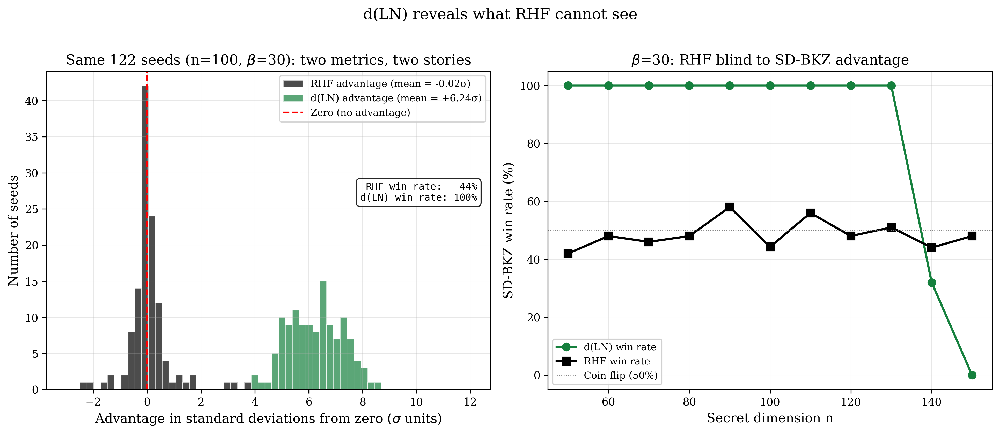
Statistical rigour. At favourable dimensions (n = 50–120), all groups show statistically significant d(LN) advantages for SD-BKZ. Paired t-tests reject the null hypothesis of zero mean advantage with p < 10−15 for 28 of the 33 complete groups; One-sided Wilcoxon signed-rank tests confirm significance without normality assumptions (p < 10−10 in these groups). Effect sizes range from Cohen’s d = 1.31 (n = 50, β = 40) to 9.40 (n = 100, β = 40). The 95% confidence intervals on the mean advantage exclude zero in 32 of 33 groups (Table 4). The sole exception is at n = 130, β = 20, where the CI straddles zero ([−0.028, +0.034], p = 0.85), the coin-flip transition point. Shapiro-Wilk tests confirm the advantage distributions are consistent with normality (p > 0.05 in all but one group; the exception at n = 100, β = 20, p = 0.033, shows only mild departure that does not affect the paired t-test at this sample size). The asymmetry is also quantified precisely: across all groups where BKZ wins any seeds, the mean loss margin is below 0.04 nats, while the mean win margin for SD-BKZ ranges from 0.106 to 1.346 nats.
Table 4. Statistical tests on d(LN) advantage. Effects are large at favourable dimensions and vanish as the advantage declines. All p-values are for one-sided tests.
| n | β | 95% CI | Cohen’s d | t-test p | Wilcoxon p |
|---|---|---|---|---|---|
| 50 | 20 | [0.262, 0.319] | 2.02 | < 10−15 | < 10−10 |
| 50 | 30 | [0.376, 0.433] | 2.82 | < 10−15 | < 10−10 |
| 50 | 40 | [0.090, 0.121] | 1.31 | < 10−15 | < 10−10 |
| 60 | 20 | [0.278, 0.350] | 1.74 | < 10−15 | < 10−10 |
| 60 | 30 | [0.456, 0.524] | 2.85 | < 10−15 | < 10−10 |
| 60 | 40 | [0.208, 0.252] | 2.06 | < 10−15 | < 10−10 |
| 70 | 20 | [0.380, 0.446] | 2.49 | < 10−15 | < 10−10 |
| 70 | 30 | [0.489, 0.559] | 2.97 | < 10−15 | < 10−10 |
| 70 | 40 | [0.320, 0.358] | 3.55 | < 10−10 | < 10−10 |
| 80 | 20 | [0.439, 0.507] | 2.74 | < 10−15 | < 10−10 |
| 80 | 30 | [0.542, 0.618] | 3.01 | < 10−15 | < 10−10 |
| 80 | 40 | [0.382, 0.433] | 3.13 | < 10−15 | < 10−10 |
| 90 | 20 | [0.444, 0.523] | 2.43 | < 10−15 | < 10−10 |
| 90 | 30 | [0.882, 0.962] | 4.60 | < 10−15 | < 10−10 |
| 90 | 40 | [0.452, 0.514] | 3.04 | < 10−15 | < 10−10 |
| 100 | 20 | [0.328, 0.396] | 2.12 | < 10−15 | < 10−10 |
| 100 | 30 | [1.303, 1.389] | 6.20 | < 10−15 | < 10−10 |
| 100 | 40 | [1.151, 1.201] | 9.40 | < 10−15 | < 10−10 |
| 110 | 20 | [0.203, 0.267] | 1.47 | < 10−15 | < 10−10 |
| 110 | 30 | [1.072, 1.151] | 5.64 | < 10−15 | < 10−10 |
| 110 | 40 | [1.124, 1.191] | 6.88 | < 10−15 | < 10−10 |
| 120 | 20 | [0.063, 0.125] | 0.60 | 3.3 × 10−8 | 1.4 × 10−7 |
| 120 | 30 | [0.711, 0.771] | 4.97 | < 10−15 | < 10−10 |
| 120 | 40 | [−0.048, −0.008] | −0.28 | 0.008 | 0.99 |
| 130 | 20 | [−0.029, 0.035] | 0.02 | 0.85 | 0.74 |
| 130 | 30 | [0.330, 0.374] | 3.19 | < 10−15 | < 10−10 |
| 130 | 40 | [−1.361, −1.307] | −9.70 | < 10−15 | 1.0 |
| 140 | 20 | [−0.136, −0.080] | −0.76 | 1.7 × 10−11 | 6.2 × 10−10 |
| 140 | 30 | [−0.053, −0.019] | −0.42 | 7 × 10−5 | 1.5 × 10−4 |
| 140 | 40 | [−1.496, −1.409] | −6.59 | < 10−15 | 1.0 |
| 150 | 20 | [−0.201, −0.145] | −1.21 | < 10−15 | < 10−10 |
| 150 | 30 | [−0.415, −0.374] | −3.88 | < 10−15 | < 10−10 |
| 150 | 40 | [−1.333, −1.253] | −6.30 | < 10−15 | 1.0 |
Five groups in Table 3 (marked *) show anomalous mean RHF advantages. These are driven by single outlier seeds and vividly illustrate why RHF fails as a quality metric.
At n = 60, β = 20, one seed (seed 70) produces a pathological SD-BKZ first basis vector with RHF = 4.67, approximately 9× the group mean of 0.51. This single seed shifts the group’s mean RHF advantage to −0.042 with standard deviation 0.41, while the remaining 99 seeds show |RHF advantage| < 10−7. The median RHF advantage for the group is −2.6 × 10−12, consistent with all other parameter groups. Similar outlier effects appear at n = 70 (β = 20: mean RHF Δ = +0.70, std = 2.18; β = 30: mean RHF Δ = −0.41, std = 2.05) and at n = 80 (β = 30: mean RHF Δ = +0.20; β = 40: mean RHF Δ = +0.29). The pattern of rare, large RHF outliers driven by single anomalous seeds persists across dimensions.
Crucially, all five outlier seeds still exhibit positive d(LN) advantages — the interior basis structure remains superior despite a degraded first vector. These outlier seeds show anomalously long first vectors, which is distinct from the “head concavity” phenomenon characterised by Bai, Stehlé and Wen [9], where BKZ-reduced bases systematically produce shorter-than-predicted first vectors. Whether these rare pathological seeds represent an exaggerated or inverted form of head concavity in SD-BKZ warrants further investigation.
The core lesson is structural: a single anomalous shortest vector dominates the RHF scalar while the quality of the remaining d − 1 Gram–Schmidt vectors is ignored. A metric that can be distorted by one vector out of d is not a reliable basis for algorithm comparison.
The win rate alone understates the result. When SD-BKZ wins (the vast majority of seeds), the advantage is substantial: typically 0.2–0.5 nats. When BKZ wins (the minority), the margin is negligible: below 0.04 nats across all groups. This asymmetry means the d(LN) advantage is not a noisy symmetric effect — it is a one-sided structural improvement.
The effect is most consistent at β = 40, n = 100, where the standard deviation (0.125) is roughly one-tenth of the mean (1.176), the win rate is 100%, and Cohen’s d reaches 9.40, the highest in the dataset. At β = 40, n = 70, the ratio is also tight (std 0.096, mean 0.339, d = 3.55). This suggests the backward pass produces a more deterministic improvement when the SVP oracle is strong.
The weakest group (n = 50, β = 40, 90% win rate, Cohen’s d = 1.31) was investigated in detail. The 10 seeds where BKZ achieves lower d(LN) show advantages of −0.002 to −0.082 nats (mean −0.039), approximately 3× smaller in magnitude than the mean winning margin of +0.122 nats. The losing seeds are scattered across the seed range with no clustering, show identical initial RHF to winning seeds, and all reached the maximum tour count without stagnating. Crossover analysis reveals that SD-BKZ led BKZ in every losing seed at earlier tours (crossover tours 3–18) before BKZ marginally overtook it by tour 100. This is consistent with under-convergence at the tour limit rather than a genuine BKZ advantage: both algorithms are still slowly improving at tour 100, and the 10 “losses” are coin-flip outcomes in the convergence noise.
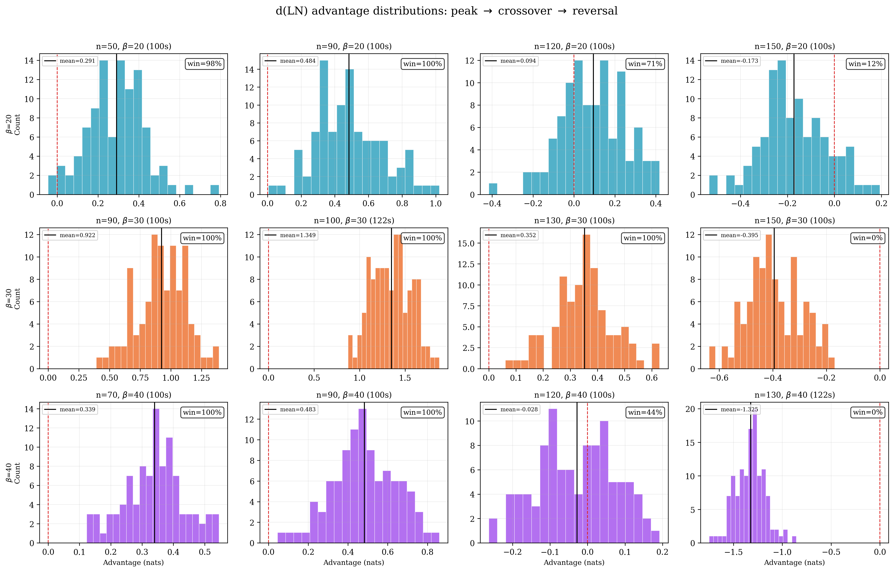
Neither algorithm converges to the fixed point within the allotted tours: all seeds reach the maximum tour count. However, per-tour d(LN) trajectories reveal that SD-BKZ drops below BKZ early (crossover at tour 3–23 depending on parameters) and maintains its lead throughout. The crossover is fastest at β = 40 (tour 3–6) and slowest at β = 20 (tour 16–23). As dimension increases from n = 50 to n = 80, the crossover tour grows slowly with dimension within each β group (e.g., median 16→23 at β = 20 from n = 50 to n = 80), suggesting the relative convergence speed is primarily a property of the block size.
SD-BKZ exhibits higher per-tour variance in d(LN) than BKZ, but its mean remains consistently lower. This suggests the backward pass introduces more stochasticity per tour while still producing a net improvement. However, per-tour advantage trajectories are non-monotonic: the advantage at any given intermediate tour is not predictive of the final advantage. In individual seeds, the advantage can oscillate from positive to negative and back before settling. This means early-tour d(LN) cannot serve as a cheap signal for which algorithm to commit to — the full tour budget is needed for a reliable comparison.
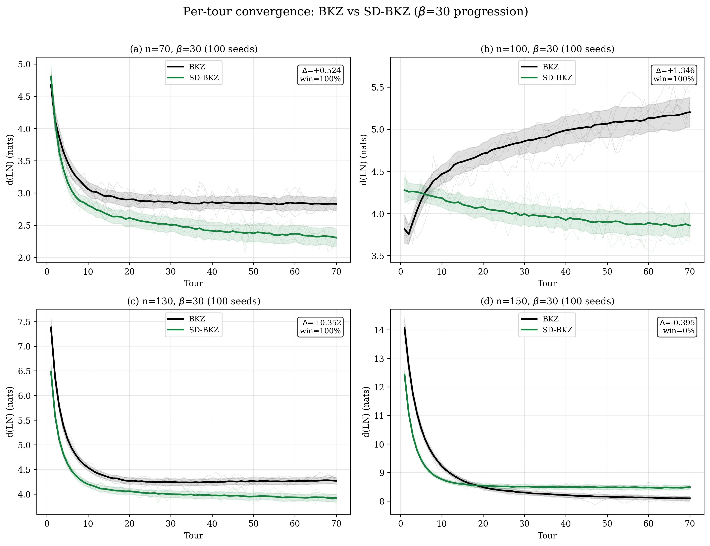
It is important to distinguish between convergence speed and convergence target. If SD-BKZ merely reached the same fixed point faster, one could achieve the same result by running BKZ for more tours. We tested this directly across 500 seeds in five groups, running BKZ at 3× the standard tour count and comparing against SD-BKZ at 1×.
At β = 30, the result is unambiguous: across 400 seeds at n = 50, 60, 70, and 80, BKZ at 210 tours fails to match SD-BKZ at 70 tours in any seed (0/400 gaps closed). The gap does not narrow with extra tours; in fact, it widens with dimension: +0.38 nats at n = 50, +0.50 at n = 60, +0.55 at n = 70, +0.56 at n = 80. BKZ has converged by tour 70; tours 71 through 210 produce oscillation around a floor that SD-BKZ sits well below. This is not a speed difference; it is a capability difference. The backward pass reaches basis states that forward-only BKZ cannot access regardless of runtime budget. Note that this comparison is generous to BKZ: each SD-BKZ tour includes a backward pass costing approximately 2.3–2.7× a single BKZ tour (Table 2), so SD-BKZ at 70 tours consumes roughly the same wall-clock time as BKZ at 160–190 tours. At n = 50, β = 30, the comparison is concrete: SD-BKZ@70 costs 1,486 seconds while BKZ@210 costs approximately 1,695 seconds. BKZ receives 14% more compute and still cannot close the gap.
At β = 20, the picture is different. At n = 60, BKZ at 150 tours (3× the standard 50) closes 67% of the gap and wins 26 of 100 seeds. BKZ is still making progress with extra tours at the weaker oracle strength, it is slow but not structurally limited. This β-dependent split is informative: the capability gap emerges only when the SVP oracle is strong enough (β ≥ 30) for the backward pass to provide structural improvements that the forward pass cannot replicate. At β = 20, the forward pass has not yet exhausted its own convergence capacity, so additional tours can partially compensate for the lack of a backward pass.
A convergence headroom analysis of per-tour trends at the tour limit provides complementary evidence. In high-advantage groups, BKZ’s d(LN) trend over the last 5 tours is positive (stalling or diverging: +0.041 at n = 100, β = 30; +0.027 at n = 110, β = 20), while SD-BKZ’s trend is smaller (+0.010 and −0.008 respectively). BKZ is stalling or diverging in its final tours while SD-BKZ either descends (n = 110) or stalls at roughly one-quarter the rate (n = 100). The floor fluctuation ratio (SD-BKZ / BKZ per-tour variance) ranges from 1.0 to 1.4 across favourable groups, confirming both algorithms are at comparable convergence states. The reported d(LN) advantages are therefore conservative: additional tours would be expected to widen, not narrow, the gap.
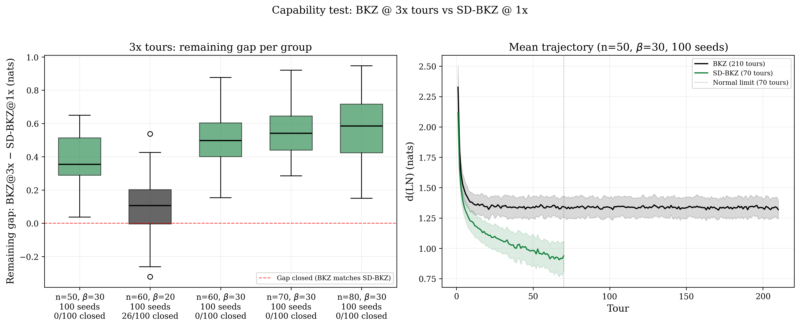
A long-tour convergence test at n = 90, β = 30 (20 seeds, 500 tours) confirms and extends this finding. BKZ flatlines after tour 70, improving by only +0.042 nats over 430 additional tours. SD-BKZ continues descending throughout, gaining +0.448 nats over the same interval. The advantage widens from +0.925 nats at tour 70 (the standard limit) to +1.331 nats at tour 500. BKZ has genuinely stalled; SD-BKZ has not. The d(LN) advantages reported throughout this paper, measured at the standard tour limits, are therefore conservative: longer runs would widen every gap where SD-BKZ leads.
The inverse experiment at the crossover dimension (n = 140, β = 30, 20 seeds, 500 tours) confirms the reversal is equally real. BKZ improves more than SD-BKZ past tour 70 (+0.122 vs +0.099 nats), slightly widening the gap from −0.052 at tour 70 to −0.075 at tour 500 (20% SD-BKZ win rate). The crossover is not an artifact of the finite tour budget; whatever structural property causes SD-BKZ to dominate at n ≤ 120 stops working between n = 130 and n = 140, and more compute does not rescue it.
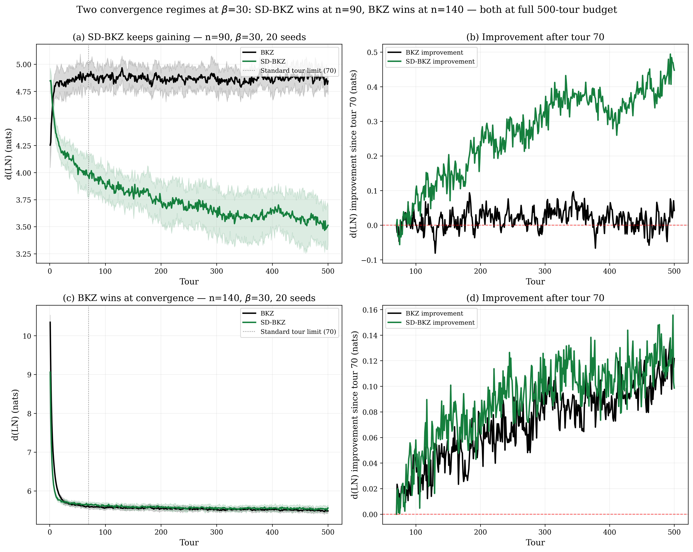
To understand where in the basis SD-BKZ’s advantage concentrates, we decompose the d(LN) improvement by position in the Rankin profile. For each seed, we compute the per-position distance to the fixed point for both algorithms (|Rk − R*k| for BKZ and SD-BKZ), then measure where SD-BKZ is closer. We partition the profile into three equal segments: head (first third of the active block indices), middle, and tail.
Table 5. Profile-position decomposition of the d(LN) advantage. The middle third dominates across the n = 50–110 favourable regime (21/21 groups); beyond the peak dimension the decomposition flips as described in Figure 6. Representative subset (n = 50–70); full decomposition for all 33 groups in supplementary JSON (results/profile_decomposition.json).
| n | β | Seeds | Head % | Mid % | Tail % | Mid win rate |
|---|---|---|---|---|---|---|
| 50 | 20 | 100 | 21% | 44% | 35% | 97% |
| 50 | 30 | 100 | 21% | 46% | 33% | 100% |
| 50 | 40 | 100 | 7% | 82% | 11% | 91% |
| 60 | 20 | 100 | 22% | 44% | 34% | 94% |
| 60 | 30 | 100 | 19% | 45% | 36% | 100% |
| 60 | 40 | 100 | 25% | 55% | 20% | 96% |
| 70 | 20 | 100 | 20% | 45% | 35% | 98% |
| 70 | 30 | 100 | 18% | 45% | 37% | 100% |
| 70 | 40 | 100 | 25% | 53% | 22% | 100% |
The result is unambiguous: the middle third of the Rankin profile accounts for 44–82% of the total d(LN) improvement in the n = 50–70 subset shown. At β = 40, the concentration is most extreme — at n = 50, 82% of the improvement comes from the middle, with head (7%) and tail (11%) nearly negligible. The middle-region win rate is 91–100% across all favourable groups.
This contradicts the naïve expectation that the backward pass primarily improves the “tail” of the basis. Standard BKZ sweeps forward, optimising from the head; the middle of the profile is the region the forward pass reaches last and optimises least effectively. SD-BKZ’s backward pass (equivalently, a forward pass on the reversed dual basis) works from the opposite direction, reaching the middle from below. The middle is therefore the region where the two passes overlap most productively — it receives optimisation pressure from both directions in SD-BKZ, but only from one direction in standard BKZ.
The β dependence is also informative: at β = 40, the SVP oracle is strong enough that the forward pass already handles the head and tail adequately; the residual improvement available is concentrated in the middle. At β = 20, the oracle is weaker everywhere, so the improvement is more diffuse (21/44/35% head/mid/tail).
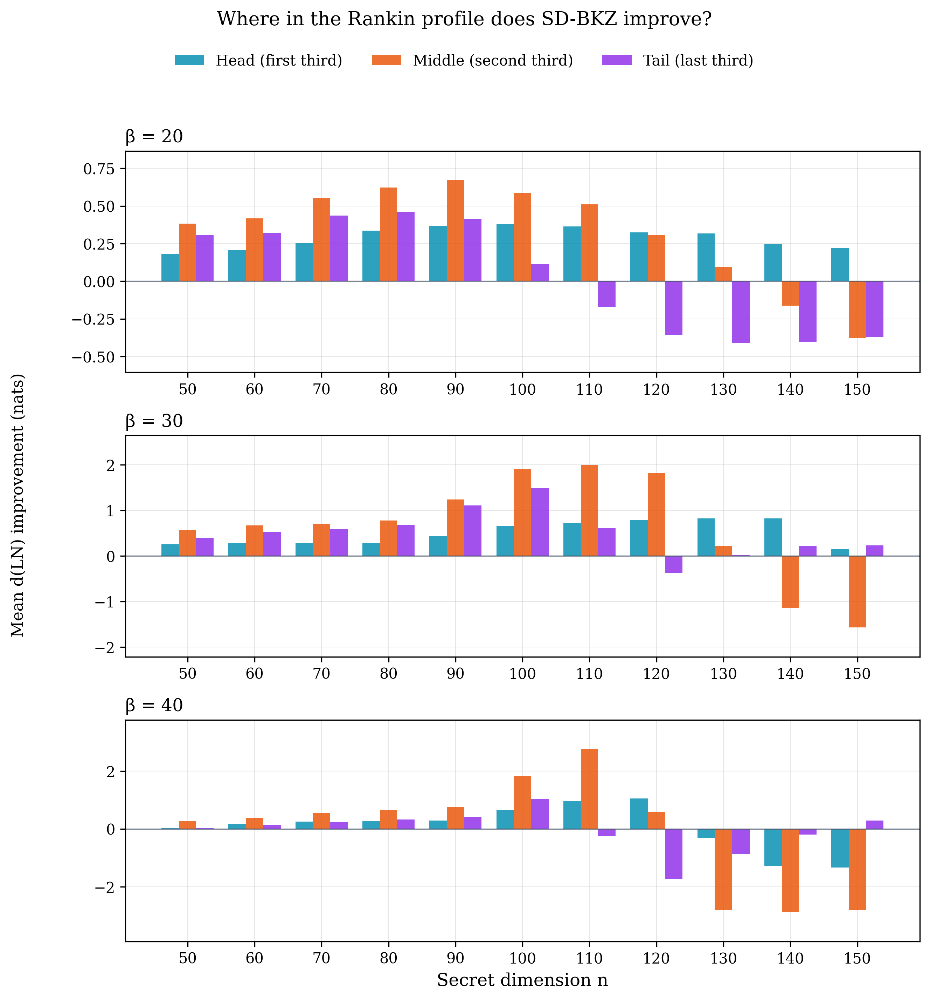
At higher dimensions where the advantage is collapsing, the spatial distribution shifts dramatically. At n = 130, β = 20 (mean advantage 0.003, 54% win), the residual improvement is almost entirely in the head of the profile (Figure 6). At this low β/n ratio (0.15), the block size is too small relative to the lattice dimension for the dual-direction sweep to provide meaningful coverage of the middle region. The decline at β ≥ 30 has a different character: per-position analysis (Section 6.3) shows that the backward pass retains its reach into the middle but increasingly overcorrects the tail, with the resulting negative dip eventually overwhelming the positive contribution.
The GSO log-norm profiles (Figure 8) reveal a complementary structural difference: at n ≥ 130, BKZ exhibits a sharp downward hook at the tail of the basis (the last few Gram–Schmidt log-norms curve below the Li–Nguyen prediction because BKZ cannot apply a full β-block when fewer than β vectors remain). SD-BKZ produces a smooth taper into the same final region, visually eliminating the hook. However, per-position analysis against the Rankin fixed point R* reveals a subtlety: at a small number of tail positions (e.g., positions 91–94 at n = 100, β = 30), BKZ is actually closer to R* than SD-BKZ. The backward pass overcorrects these positions, pushing them further below the fixed point than BKZ’s hook does. At position 93, BKZ is within 0.2 nats of R* in 97% of seeds, while SD-BKZ undershoots by 0.78 nats. The two algorithms thus produce different tail geometries, neither strictly closer to R* at every position. This tail overcorrection is small at favourable dimensions but grows with n, and is the primary mechanism behind the advantage decline described in Section 6 (see Figure 12 for the full per-position landscape across all 33 groups).
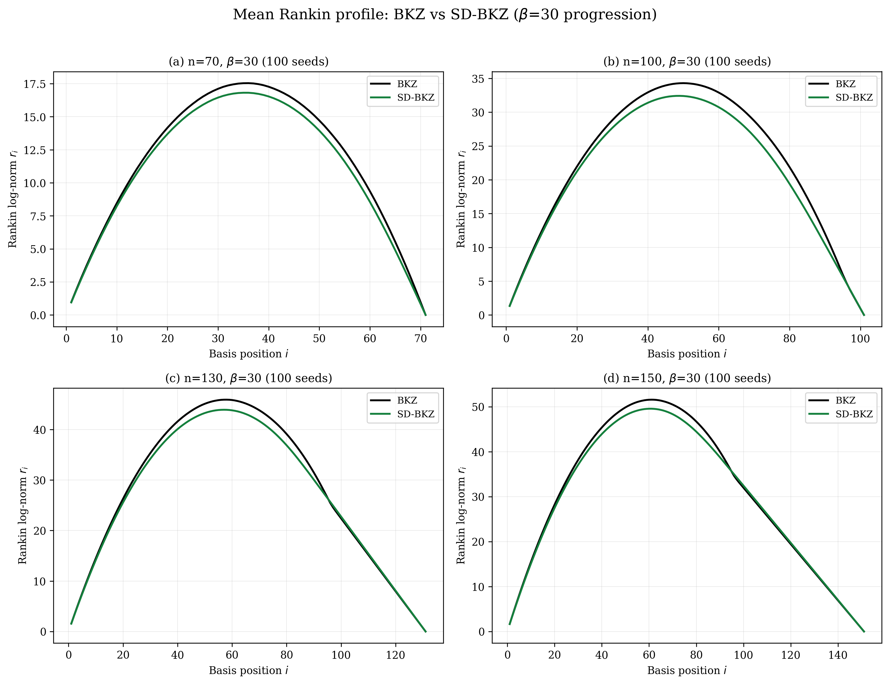
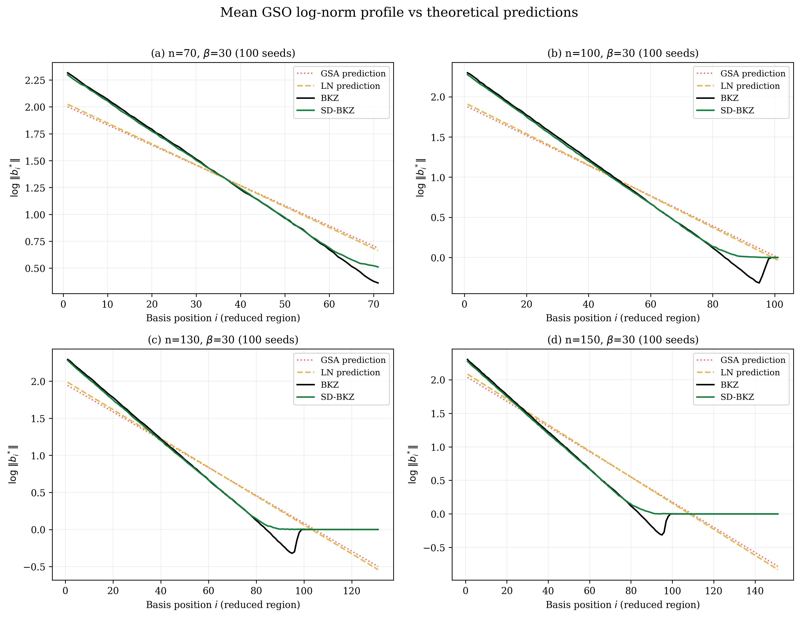
The advantage peaks at β = 30 at most measured dimensions, but the relationship is dimension-dependent. At n = 110, β = 40 overtakes β = 30 (+1.158 vs +1.112, both at 100 seeds) before collapsing dramatically:
Table 6. d(LN) advantage by block size and dimension. Bold indicates the peak for each block size.
| β | n=50 | n=60 | n=70 | n=80 | n=90 | n=100 | n=110 | n=120 | n=130 | n=140 | n=150 |
|---|---|---|---|---|---|---|---|---|---|---|---|
| 20 | 0.291 | 0.314 | 0.413 | 0.473 | 0.484 | 0.362 | 0.235 | 0.094 | 0.003 | −0.108 | −0.173 |
| 30 | 0.405 | 0.490 | 0.524 | 0.580 | 0.922 | 1.346 | 1.112 | 0.741 | 0.352 | −0.036 | −0.395 |
| 40 | 0.106 | 0.230 | 0.339 | 0.408 | 0.483 | 1.176 | 1.158 | −0.028 | −1.334 | −1.452 | −1.293 |
All groups at 100 seeds.
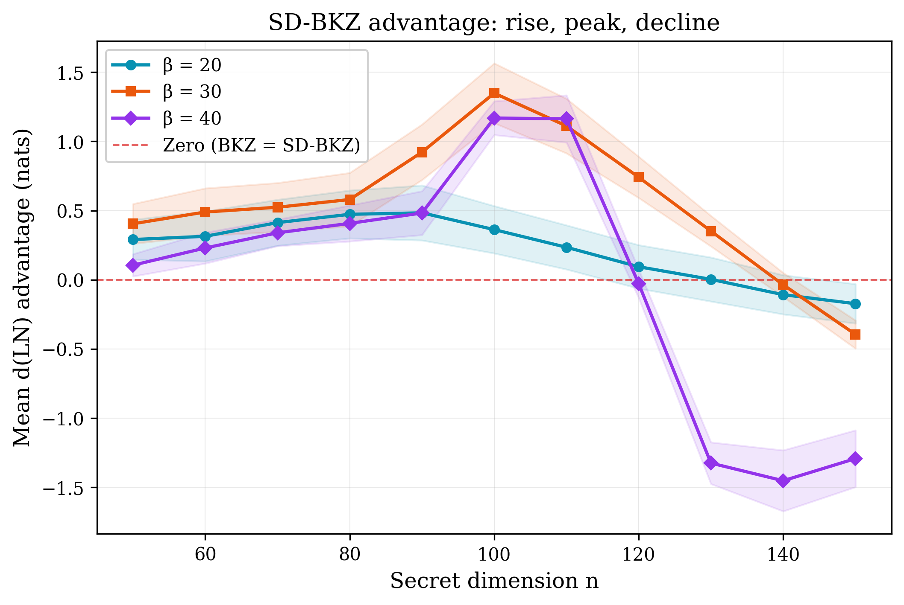
At n = 50, the ratio of β = 30 advantage to β = 40 advantage is 3.8:1. At n = 70, this ratio has narrowed to 1.5:1, and at n = 80 it is 1.4:1. The β = 40 advantage more than tripled from n = 50 to n = 70 (+222%) and continued growing to 0.408 at n = 80 (+19%). At n = 90, β = 30 undergoes a dramatic acceleration: the advantage jumps from 0.580 to 0.922 nats (+59%), the largest single-step increase in the completed dataset. This is followed by a decline to 0.741 at n = 120 and 0.352 at n = 130. The β = 20 advantage follows a similar pattern, peaking at n = 90 (0.484) before declining through 0.362 (n = 100), 0.094 (n = 120), 0.003 (n = 130), and −0.108 (n = 140, where BKZ actively wins). The peak dimension is block-size-dependent: β = 20 peaks at n = 90, while β = 30 peaks at n = 100 (Section 6.2).
Standard BKZ sweeps forward through the basis, optimising from the head. The middle portion of the Gram–Schmidt profile is the last region the forward pass reaches effectively. SD-BKZ adds a backward pass (equivalently, a forward pass on the reversed dual), which works the basis from the opposite direction. As our profile decomposition confirms (Section 5.4), the middle of the Rankin profile — not the tail — is where SD-BKZ’s improvement concentrates. As lattice dimension grows, this middle region expands, and a larger block size allows each pass to reach further into it. This dimension-dependent interaction has never been empirically measured. The standard metric (RHF) is blind to interior profile improvements, and the SD-BKZ empirical literature has been frozen at 10 instances since 2016. Testing at intermediate block sizes (β ∈ {25, 35}) would help characterise the transition more precisely.
Table 7. Growth rate of d(LN) advantage between dimensions.
| β | n=50→60 | n=60→70 | n=70→80 | n=80→90 | n=90→100 | n=100→110 | Character |
|---|---|---|---|---|---|---|---|
| 20 | +8% | +32% | +15% | +2% | −25% | −35% | Peak n=90, collapsing |
| 30 | +21% | +7% | +11% | +59% | +46% | −17% | Peak n=100, declining |
| 40 | +117% | +48% | +20% | +18% | +144% | −2% | Peak n=110, cliff |
At β = 30, the full trajectory is: 0.405 → 0.490 → 0.524 → 0.580 → 0.922 → 1.346 → 1.112 → 0.741 → 0.352 → −0.036 → −0.395 nats from n = 50 through n = 150, peaking at n = 100 (+46% from n = 90) then declining sharply. At β = 20, the trajectory is: 0.291 → 0.314 → 0.413 → 0.473 → 0.484 → 0.362 → 0.235 → 0.094 → 0.003 → −0.108 → −0.173, peaking at n = 90 before collapsing. At β = 40, the advantage rises from 0.106 (n = 50) through 0.483 (n = 90) and 1.176 (n = 100, 100 seeds) to a confirmed peak at n = 110 (+1.158, 100 seeds, overtaking β = 30), then collapses catastrophically: −0.028 at n = 120, −1.334 at n = 130, −1.452 at n = 140, −1.293 at n = 150 (all at 100 seeds, 0% win). The peak dimension migrates upward with block size: β = 20 at n = 90, β = 30 at n = 100, β = 40 at n = 110.
The variance behaviour also differs by block size. At β = 40, n = 70, the standard deviation is 0.096, roughly one-quarter of the mean. At β = 30, the standard deviation remains stable at 0.10–0.22 across dimensions. At β = 40, n = 130, the standard deviation drops to 0.138 despite a mean of −1.334, giving Cohen’s d ≈ −10: BKZ wins every seed by a large, consistent margin. The backward pass is not just ineffective at high dimensions; it is deterministically harmful.
The SD-BKZ advantage does not grow monotonically with dimension, and the peak dimension is not universal. At β = 20, the advantage peaks at n = 90 (0.484 nats), then declines smoothly through 0.235 (n = 110) and 0.094 (n = 120) to a coin-flip region at n = 130 (0.003 nats, 54% win), and into active BKZ superiority at n = 140 (−0.108 nats, 22% win) and n = 150 (−0.173 nats, 12% win). At β = 30, the peak migrates to n = 100 (1.346 nats, the largest mean advantage in the dataset), followed by decline to 1.112 (n = 110) and 0.741 (n = 120), crossing zero near n = 140 (−0.036, 100 seeds, 32% win) and reaching −0.395 at n = 150 (0% win rate, 100 seeds).
The β = 40 trajectory reveals the most dramatic behaviour in the dataset. The advantage rises steadily from +0.106 at n = 50 through +0.483 at n = 90, reaches +1.158 at n = 110 (100 seeds, overtaking β = 30), then falls off a cliff: −0.028 at n = 120 (44% win), −1.334 at n = 130 (0% win), −1.452 at n = 140 (0% win), −1.293 at n = 150 (0% win), all confirmed at 100 seeds. This is a swing of 2.5 nats in two dimension steps (n = 110 to n = 130), an order of magnitude steeper than the β = 30 decline (1.75 nats over five steps) or the β = 20 decline (0.66 nats over six steps). The inversion severity scales with block size: larger β produces both higher peaks and steeper collapses. The slight recovery from −1.452 at n = 140 to −1.293 at n = 150 suggests the decline may not be monotonic beyond the cliff.
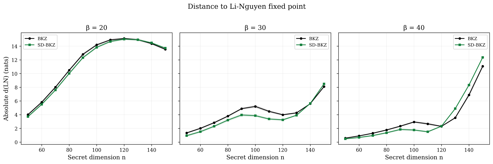
Table 8. Dimension scaling at and beyond the peak. The peak dimension migrates upward with block size.
| n | β | Seeds | β/n | Mean adv. | Std | Win rate |
|---|---|---|---|---|---|---|
| 90 | 20 | 100 | 0.22 | 0.484 | 0.198 | 100% |
| 90 | 30 | 100 | 0.33 | 0.922 | 0.199 | 100% |
| 90 | 40 | 100 | 0.44 | 0.483 | 0.159 | 100% |
| 100 | 20 | 100 | 0.20 | 0.362 | 0.171 | 99% |
| 100 | 30 | 100 | 0.30 | 1.346 | 0.217 | 100% |
| 100 | 40 | 100 | 0.40 | 1.176 | 0.125 | 100% |
| 110 | 20 | 100 | 0.18 | 0.235 | 0.160 | 92% |
| 110 | 30 | 100 | 0.27 | 1.112 | 0.197 | 100% |
| 110 | 40 | 100 | 0.36 | 1.158 | 0.168 | 100% |
| 120 | 20 | 100 | 0.17 | 0.094 | 0.157 | 71% |
| 120 | 30 | 100 | 0.25 | 0.741 | 0.149 | 100% |
| 120 | 40 | 100 | 0.33 | −0.028 | 0.102 | 44% |
| 130 | 20 | 100 | 0.15 | 0.003 | 0.159 | 54% |
| 130 | 30 | 100 | 0.23 | 0.352 | 0.111 | 100% |
| 130 | 40 | 100 | 0.31 | −1.334 | 0.138 | 0% |
| 140 | 20 | 100 | 0.14 | −0.108 | 0.142 | 22% |
| 140 | 30 | 100 | 0.21 | −0.036 | 0.087 | 32% |
| 140 | 40 | 100 | 0.29 | −1.452 | 0.220 | 0% |
| 150 | 20 | 100 | 0.13 | −0.173 | 0.142 | 12% |
| 150 | 30 | 100 | 0.20 | −0.395 | 0.102 | 0% |
| 150 | 40 | 100 | 0.27 | −1.293 | 0.205 | 0% |
The β/n ratio alone does not explain this pattern. At n = 110, β = 40 (β/n = 0.36) shows the highest advantage of any β = 40 group (+1.158, 100 seeds), but just two dimension steps later at n = 130 (β/n = 0.31) it has collapsed to −1.334 (0% win, 100 seeds). Meanwhile, β = 30 at n = 130 (β/n = 0.23) remains positive (+0.352, 100% win). The β = 40 cliff is not predicted by β/n and is an order of magnitude steeper than the β = 30 decline.
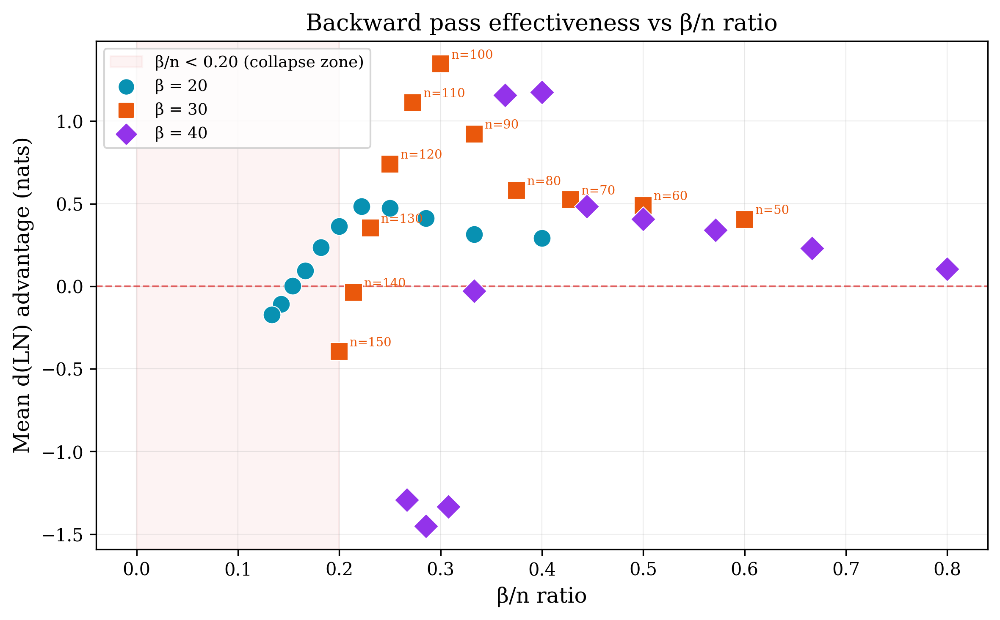
The β = 40 cliff complicates the convergence depth explanation. If the negative advantage at n = 120–150 were purely due to insufficient convergence, we would not expect β = 40 to overtake β = 30 at n = 110 (+1.158 vs +1.112) before collapsing. The backward pass is clearly effective at n = 110 with the same tour budget that produces catastrophic failure two dimension steps later. This suggests the cliff is a structural breakdown, not an artifact of under-convergence: there is a dimension threshold beyond which the backward pass on a 40-dimensional sublattice actively degrades the basis rather than improving it. Whether this threshold can be shifted by increasing the tour count remains an open question; a 3× tour test at β = 40 (analogous to Section 5.3) would be informative but is computationally prohibitive at these dimensions (a single seed at n = 130, β = 40, 300 tours requires approximately 25,000 seconds based on Table 2 extrapolation).
SD-BKZ effectiveness depends on at least three interacting factors: block size, lattice dimension, and convergence depth (tour count relative to per-tour cost). The backward pass is beneficial when all three are in a favourable regime. The β = 40 cliff demonstrates that larger block sizes amplify both the peak advantage and the severity of the collapse, suggesting a phase-transition-like boundary in the parameter space.
A per-position decomposition of the Rankin profile reveals that the decline mechanism differs by block size (Figure 12). At β ∈ {20, 30}, the peak positional advantage (the best single position where SD-BKZ is closest to R*) remains remarkably stable as dimension grows: at β = 30, the peak is +0.70 nats at n = 50 and still +1.10 nats at n = 150 (the collapse dimension). What drives the mean advantage negative is a growing overcorrection dip at the tail, where SD-BKZ pushes positions further below R* than BKZ does. The dip grows from −0.26 nats at n = 50 to −2.28 at n = 150, eventually overwhelming the stable peak. The backward pass does not lose its beneficial reach into the middle; it loses precision at the tail boundary, and the resulting overshoot scales faster than the headline advantage. At β = 40, the mechanism is qualitatively different: both the peak and the dip collapse simultaneously (peak drops from +2.99 at n = 110 to +0.47 at n = 130), explaining why the β = 40 cliff is an order of magnitude steeper than the β = 30 decline.
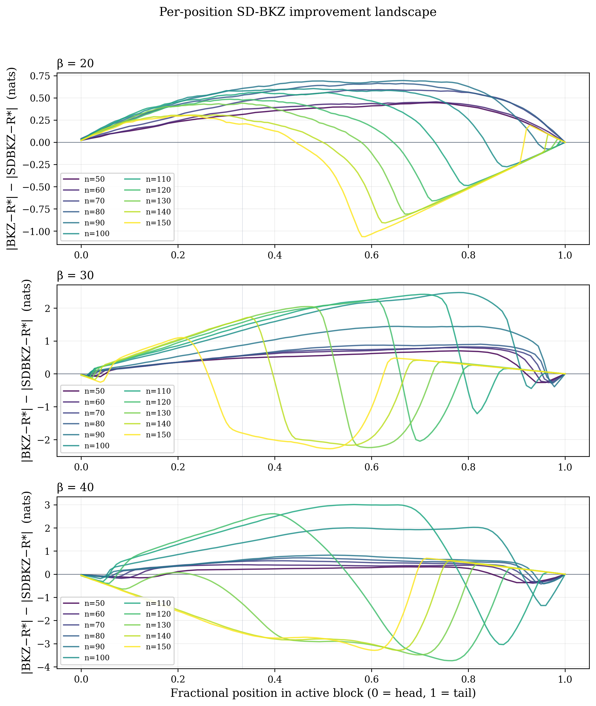
Our results demonstrate that RHF is an incomplete metric for evaluating lattice reduction quality. It captures only the length of the first basis vector, ignoring the Gram–Schmidt vectors b*2 through b*d that constitute the interior structure of the basis. The d(LN) metric, derived from the dynamical systems analysis of Li and Nguyen, captures the full Rankin profile shape and reveals quality differences that RHF misses entirely.
This raises a broader question: what other algorithmic comparisons in the lattice reduction literature might look different under d(LN)? Progressive BKZ strategies [14], alternative SVP oracles (enumeration vs. sieving), slide reduction variants [15], and different preprocessing depths all affect the reduction trajectory. If RHF cannot distinguish BKZ from SD-BKZ — algorithms that differ only in a single backward pass — it is likely blind to subtler differences between other variants as well.
We do not claim that these results have direct implications for the security of deployed lattice-based schemes; our parameter range (n ≤ 150) is far from cryptographic dimensions (n ≥ 512), and proximity to the Rankin profile fixed point does not necessarily translate to shorter vectors. We do not know whether d(LN) improvements translate to faster SVP solving or improved BDD performance; establishing such a connection is future work. What we do claim is that the evaluation methodology is incomplete. Lattice security estimators (e.g., lattice-estimator [13], building on the methodology of [17]) are typically validated against empirical RHF measurements. If RHF is blind to structural quality differences between reduction algorithms, this validation is insufficient. Our data reveals a rise-and-fall pattern that is entirely invisible to RHF. Whether a similar phenomenon occurs at cryptographic dimensions depends on the interaction between block size, dimension, and convergence depth. A 20-seed verification at q = 3329 (the ML-KEM modulus) confirmed the effect is statistically indistinguishable from q = 97 (p = 0.37), ruling out small-modulus artifacts.
This work builds on [5], not contradicts it. Their theoretical analysis predicted SD-BKZ’s superiority; our contribution is demonstrating it empirically at scale with a metric they did not use, and showing that the standard metric (RHF) is blind to the improvement they predicted. Albrecht et al. [8] subsequently used the predicted SD-BKZ geometry to achieve faster enumeration; our empirical data is consistent with the geometric assumptions underpinning their approach. The Li–Nguyen fixed point [4] provides the theoretical foundation for our metric; we operationalise their framework as a practical benchmarking tool. Bai, Stehlé and Wen [9] identified and quantified the head concavity phenomenon in BKZ, and Yu and Ducas [10] characterised second-order statistical behaviour of GS log-norm profiles, and Ducas [16] demonstrated that profile shape has direct algorithmic consequences for sieving, all demonstrating that profile-shape analysis carries practical significance beyond what RHF captures. Our d(LN) metric provides a complementary scalar summary of the full profile distance. White [7] explored dynamic block size strategies within the Li–Nguyen framework, directly motivating the question that the present work pursues.
Our lattices use q = 97, though a 20-seed verification at q = 3329 (the ML-KEM modulus) found no significant difference at n = 50 (Section 3.2); at n = 100, 38% of seeds exhibit a numerical instability in fplll’s GSO computation (Section 8). Results may differ for other lattice families (random q-ary, NTRU). Neither algorithm converges within the allotted tours; we measure distance to the BKZ fixed point for both algorithms. This is a deliberate choice; the Li–Nguyen fixed point is the only one with a closed-form expression. 500-tour convergence tests at n = 90 and n = 140 (β = 30, 20 seeds each) confirm that BKZ has genuinely stalled by tour 70, while at n = 90 SD-BKZ continues rapid descent (+0.448 nats over 430 additional tours, vs BKZ +0.042); at n = 140 both algorithms improve at comparable slow rates (BKZ +0.122, SD-BKZ +0.099), with BKZ’s marginal edge widening the reversal. This establishes the crossover as a real regime change rather than a finite-tour artifact (Section 5.3, Figure 5). A 1000-tour extension at n = 90, β = 30 (20 seeds, doubling the 500-tour budget) confirms SD-BKZ has not yet plateaued: mean d(LN) descends from 3.513 at t = 500 to 3.291 at t = 1000 (Δ = −0.222 nats) while BKZ stays flat (4.844 → 4.872, Δ = +0.028, within noise). The mean advantage therefore grows from +1.331 at t = 500 to +1.581 at t = 1000 (win rate 20/20 at both horizons), indicating the paper’s 70-tour and 500-tour numbers understate the asymptotic advantage at favourable dimensions by roughly 1.7×. Whether SD-BKZ converges to the same fixed point or a different one remains theoretically open; resolving this requires a dynamical systems analysis of SD-BKZ analogous to Li and Nguyen’s analysis of BKZ, which does not yet exist. In principle, SD-BKZ’s lower d(LN) could reflect “overshooting” the BKZ fixed point en route to a distinct attractor, rather than superior convergence toward a shared one. The 500-tour data at n = 90 argues against this: SD-BKZ’s d(LN) continues decreasing monotonically toward the Li–Nguyen prediction without passing through it, and at n = 140, both algorithms improve at similar rates toward similar values. Nonetheless, the question remains open and would benefit from theoretical resolution. A reference profile sensitivity analysis (Section 7.5) provides partial evidence: at high dimensions, SD-BKZ's output sits between the LN and GSA reference profiles, consistent with a distinct attractor. Runtime overhead of SD-BKZ (~2.5×) may not be justified in applications where only the first basis vector matters. The peak dimension is block-size-dependent (n = 90 for β = 20, n = 100 for β = 30, n = 110 for β = 40) and may be specific to our lattice family. The β = 40 cliff (Section 6.3) is confirmed at 100 seeds across all groups (n = 110 through n = 150). A 20-seed re-run at n = 130, β = 40 at 500-bit MPFR (double the 250-bit main-sweep precision) confirms the cliff is structural rather than a precision artifact of the squared-form GSO recurrence: mean advantage shifts from −1.370 to −1.282 nats (Δ = +0.088, 6.4% softening), with win rate unchanged at 0/20.
We repeated the full analysis using the Geometric Series Assumption (GSA) reference profile instead of the Li-Nguyen fixed point. Across all 3,300 main-sweep seeds (33 groups), the per-seed d(GSA) advantage correlates strongly with d(LN) (Pearson r = 0.89). Of the 33 groups, 30 agree on the sign of the mean advantage under both metrics; in the core advantage region (n ≤ 110), agreement is unanimous. d(GSA) advantages are systematically larger than d(LN), meaning the d(LN) results reported throughout this paper are the conservative case.
Three groups in the decline zone show sign reversals between the two metrics: n = 120 β = 40, n = 140 β = 30, and n = 150 β = 30. In these groups, d(LN) indicates BKZ superiority while d(GSA) indicates SD-BKZ superiority. The reversals arise because the LN reference includes a vertical offset encoding the Hermite factor prediction; at boundary groups where the advantage is near zero, this offset is large enough to flip which algorithm appears closer to the reference. The reversal groups suggest that SD-BKZ's output at high dimensions sits between the LN and GSA predictions, consistent with convergence toward a distinct attractor that neither reference profile captures exactly. This observation connects to the open theoretical question of whether SD-BKZ has a well-defined fixed point (Section 7.4).
During verification experiments at q = 3329 (the ML-KEM modulus), we discovered a numerical instability in fplll’s GSO computation that produces degenerate bases at n = 100, β = 30. The instability is not Modified Gram–Schmidt cancellation. fplll uses a Cholesky-style squared-form recurrence (fplll/gso_interface.cpp:147–151, function MatGSOInterface<ZT,FT>::update_gso_row) that computes r(i,i) = ‖bi‖² − Σk<i μi,k² · ‖b*k‖² as a single scalar subtraction with no compensation, no reorthogonalisation, and no sign check. This is strictly worse than MGS because the projected vector b*i is never materialised; the entire accumulated rounding error lands in one scalar subtract. Both MatGSO and MatGSOGram inherit this single implementation; every BKZ tour, every LLL call, every get_r query for every FT type funnels through it.
A 100-seed dataset at n = 100, β = 30, q = 3329, MPFR = 1000 bits characterises the instability at scale. Of 100 seeds, 38 (38.0%, Wilson 95% CI [29.1%, 47.8%]) exhibit degeneracy in the final reported state: 16 BKZ-only degenerate, 13 SD-BKZ-only degenerate, 9 both degenerate. The near-symmetric hit ratio (BKZ: 25, SD-BKZ: 22, ratio 1.14:1) confirms the failure is in the shared GSO code, not in either algorithm’s reduction logic. The 62 clean seeds show mean advantage +0.524 nats, median +0.569, win rate 58/62 (93.5%), consistent with a genuine SD-BKZ advantage at q = 3329 once the numerical pathology is excluded. Data sources: 10 cloud (AWS Batch), 45 primary machine (Intel 13900K), 45 secondary machine (AMD 9950X3D).
Cross-machine reproducibility is confirmed: the Intel 13900K reports 38.2% degeneracy (21/55) and the AMD 9950X3D reports 37.8% (17/45), a difference within sampling noise. A smoke test on seed 11 produced bit-identical output across architectures, ruling out any microarchitecture-specific cause.
The cancellation is sharply dimension-bounded. At n = 50, 70, and 80 (all at β = 30, q = 3329), 0/20 seeds in each group exhibit any degeneracy (0%). At n = 90, 1/20 seeds (5%) shows degeneracy. At n = 100, the rate jumps to 38/100 (38.0%). The onset occurs between n = 80 (0/20) and n = 90 (1/20). The instability persists at n = 110 (at least 22 degenerate seeds observed in a partial run, with both algorithms affected in every seed); SD-BKZ reaches the degenerate state earlier on average than BKZ (median first-spike tour 4 vs 6–11), consistent with the backward pass providing more GSO updates per tour and therefore more opportunities for catastrophic cancellation. An additional single-seed probe outside the originally sampled range (seed 101 at the same parameters) produced a clean classification with +0.834 nats advantage, landing inside the clean-subset distribution tail and reinforcing that the +0.524 mean is not an artifact of the particular 1–100 seed block. Clean-subset mean advantage is stable across the non-broken regime (+0.561 at n = 70, +0.557 at n = 80, +0.565 at n = 90 on the 19/20 clean subset, +0.524 at n = 100 clean subset), confirming the degeneracy is a numerical-instability side effect, not a real SD-BKZ failure.
BKZ trajectories on bit-identical input matrices diverge run-to-run even with FPLLL.set_random_seed called. The 38% degeneracy rate is an empirical hit probability for a hair-trigger cancellation, not a deterministic per-lattice property.
A Kahan-compensated subtraction patch applied to gso_interface.cpp:147–151 reduces the degeneracy rate from 38.0% (38/100 unpatched) to 0% (0/55 patched seeds at the same parameters), confirming that the instability is caused entirely by accumulated rounding error in the naive inner-loop subtraction. The patch passes all 15 fplll regression tests.
This finding is a new instance of an already-open failure family in fpylll/fplll. Related upstream issues: fpylll #272 (floating-point exception for linearly dependent matrix, open since 2024-03-27) and fplll #237 (numerical stability tests, open since 2017-02-28). This is a new instance, not a new bug class.
This phenomenon is mechanistically distinct from the BKZ tail hook documented at q = 97 (Figure 8, Section 5.4). The q = 97 tail hook is a smooth geometric artifact: the last few Gram–Schmidt log-norms curve downward because BKZ cannot apply a full β-block at the end of the basis. It is present in every seed, deterministic, and small in magnitude. The q = 3329 instability is intermittent, large in magnitude (log-norms reaching −345), and tour-dependent: the basis enters and exits the degenerate state stochastically across tours. Both affect the tail region of the basis, suggesting a shared geometric vulnerability, but the mechanisms are qualitatively different: one is a boundary effect of finite block size, the other is catastrophic cancellation in the Cholesky-style GSO recurrence triggered by the larger modulus. All q = 97 results in this paper are unaffected (verified clean at all dimensions). Researchers running fplll-based benchmarks at cryptographic moduli should verify GSO health by checking for non-positive diagonal entries in the get_r output.
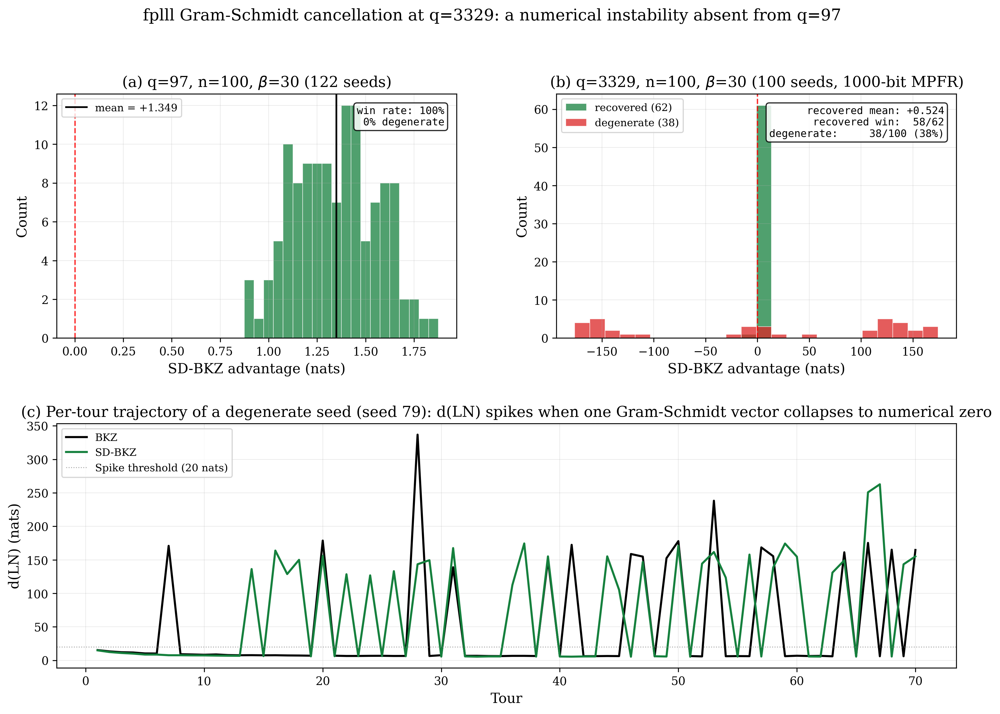
All source code, the Dockerfile, and verification scripts are available at https://github.com/BrendanChambersBourgeois/sdbkz-benchmark. The container pins exact versions of all dependencies. The verification script runs 5 seeds and checks against known-good reference values to confirm bit-identical output across environments. A full 100-seed cross-environment verification at (n = 100, β = 20) confirmed bit-identical results between the local VM (Ubuntu 24.04, MPFR 4.2.1) and AWS Batch (Debian Bookworm, MPFR 4.2.0), with SHA-256 hashes matching on all 100 seeds. A further install-surface check on a fresh Ubuntu VM (separate user, fresh OS, fresh Docker image build, fresh clone) regenerated the 100 canonical n = 50, β = 20 seeds from scratch and confirmed byte-identical match against the shipped baseline on all 100 (MATCH = 100/100, DRIFT = 0), establishing cold-clone reproducibility in addition to cross-machine reproducibility. The sweep is fully resumable and skips completed work on restart. Individual seed results are stored as JSON files with full per-tour d(LN) trajectories, Rankin profiles, and Gram–Schmidt log-norms. The Kahan-compensated fplll GSO patch referenced in Section 8 ships as patches/fplll_gso_kahan.patch in the same repository, with an accompanying README describing how to apply it and rebuild fplll.
A variance-check fill added 22 extra seeds (indices 101–122) to the four groups where the paper’s statistical claims are most load-bearing: n = 100 β = 30 (peak of the β = 30 trajectory), n = 100 β = 40, n = 110 β = 40 (peak of the β = 40 trajectory), and n = 130 β = 40 (depth of the β = 40 cliff). Reported means, confidence intervals, and win rates at these groups are computed from 122 seeds rather than the baseline 100; the qualitative picture (peak locations, cliff structure, sign of the advantage) is unchanged, and point estimates shift by less than the original 100-seed standard error.
The lattice reduction community has relied on the Root Hermite Factor as its primary quality metric for nearly two decades. We have shown that RHF is blind to a consistent, statistically significant structural difference between BKZ and SD-BKZ output bases. The Li–Nguyen Rankin profile distance d(LN) detects this difference clearly, revealing that SD-BKZ converges closer to the theoretical fixed point in over 95% of trials at favourable dimensions, with an asymmetric advantage distribution: substantial wins, negligible losses. The statistical evidence is unambiguous: paired t-tests rejecting the null with p < 10−15 in 28 of the 33 complete groups, with Cohen’s |d| reaching 9.4 at n = 100, β = 40.
The advantage does not grow monotonically with dimension. The peak dimension is block-size-dependent: β = 20 peaks at n = 90 (0.484 nats), β = 30 at n = 100 (1.346 nats), and β = 40 at n = 110 (1.158 nats, confirmed at 100 seeds). Beyond the peak, all three block sizes decline into negative territory where the backward pass is actively harmful. The inversion severity scales with block size: β = 20 declines gradually (0.66 nats over six dimension steps), β = 30 more steeply (1.75 nats over five steps), and β = 40 catastrophically (2.5 nats over two steps, from +1.158 at n = 110 to −1.334 at n = 130). Giving BKZ 3× the tour budget does not close the gap at β = 30 (0/400 seeds across four dimensions), while at β = 20 BKZ can partially compensate with additional tours (67% gap closed at n = 60). A 500-tour convergence test at the crossover dimension (n = 140, β = 30) confirms that the reversal persists even at 7× the standard tour budget, establishing it as a real regime change. This establishes that the SD-BKZ advantage at β ≥ 30 is a capability difference, not a speed difference.
These findings suggest that d(LN) should be adopted alongside RHF in future empirical evaluations of lattice reduction algorithms, and that prior comparisons based solely on RHF may warrant re-examination. Our containerised benchmark is intended to facilitate such re-examination.
The author thanks Dylan Chambers Bourgeois for contributing compute resources (AMD Ryzen 9 9950X3D) and cross-architecture reproducibility verification during the β = 40 sweep campaign, and Trill White (Deakin University) for early feedback and discussions.
[1] Chen, Y. and Nguyen, P.Q. (2011). “BKZ 2.0: Better Lattice Security Estimates.” In ASIACRYPT 2011, LNCS 7073, pp. 1–20.
[2] Gama, N. and Nguyen, P.Q. (2008). “Predicting Lattice Reduction.” In EUROCRYPT 2008, LNCS 4965, pp. 31–51.
[3] Hanrot, G., Pujol, X., and Stehlé, D. (2011). “Analyzing Blockwise Lattice Algorithms Using Dynamical Systems.” In CRYPTO 2011, LNCS 6841, pp. 447–464.
[4] Li, J. and Nguyen, P.Q. (2024). “A Complete Analysis of the BKZ Lattice Reduction Algorithm.” Journal of Cryptology. IACR ePrint 2020/1237.
[5] Micciancio, D. and Walter, M. (2016). “Practical, Predictable Lattice Basis Reduction.” In EUROCRYPT 2016, LNCS 9665, pp. 820–849. Full version: ePrint 2015/1123.
[6] Schnorr, C.P. and Euchner, M. (1994). “Lattice basis reduction: improved practical algorithms and solving subset sum problems.” Mathematical Programming, 66, pp. 181–199.
[7] White, T. (2026). “Optimisation in BKZ: An analysis of dynamic block size.” AMSI Summer Research Scholarships 2025–26, Deakin University. Profile: https://srs.amsi.org.au/student-profile/trillion-white/ Report: https://srs.amsi.org.au/wp-content/uploads/sites/92/2026/03/white_trill_srs-report.pdf
[8] Albrecht, M.R., Bai, S., Fouque, P.-A., Kirchner, P., Stehlé, D. and Wen, W. (2020). “Faster Enumeration-based Lattice Reduction: Root Hermite Factor k1/(2k) in Time kk/8+o(k).” In CRYPTO 2020, LNCS 12171, pp. 186–212. ePrint 2020/707.
[9] Bai, S., Stehlé, D. and Wen, W. (2018). “Measuring, Simulating and Exploiting the Head Concavity Phenomenon in BKZ.” In ASIACRYPT 2018, LNCS 11272, pp. 369–404. ePrint 2018/856.
[10] Yu, Y. and Ducas, L. (2017). “Second Order Statistical Behavior of LLL and BKZ.” In SAC 2017. ePrint 2017/730.
[11] The FPLLL development team. fplll, a lattice reduction library. https://github.com/fplll/fplll
[12] The FPYLLL development team. fpylll, a Python interface to fplll. https://github.com/fplll/fpylll
[13] Albrecht, M.R. et al. lattice-estimator. https://github.com/malb/lattice-estimator
[14] Aono, Y., Wang, Y., Hayashi, T. and Takagi, T. (2016). “Improved Progressive BKZ Algorithms and Their Precise Cost Estimation by Sharp Simulator.” In EUROCRYPT 2016, LNCS 9665, pp. 789–819.
[15] Aggarwal, D., Li, J., Nguyen, P.Q. and Stephens-Davidowitz, N. (2020). “Slide Reduction, Revisited — Filling the Gaps in SVP Approximation.” In CRYPTO 2020, LNCS 12171, pp. 274–295.
[16] Ducas, L. (2018). “Shortest Vector from Lattice Sieving: a Few Dimensions for Free.” In EUROCRYPT 2018, LNCS 10820, pp. 125–145.
[17] Albrecht, M.R., Player, R. and Scott, S. (2015). “On the Concrete Hardness of Learning with Errors.” Journal of Mathematical Cryptology, 9(3), pp. 169–203. ePrint 2015/046.
[W20] Walter, M. (2020). “Lattice Blog Reduction — Part III: Self-Dual BKZ.” Simons Institute Blog. https://blog.simons.berkeley.edu/2020/08/lattice-blog-reduction-part-iii-self-dual-bkz/
Code and data: github.com/BrendanChambersBourgeois/sdbkz-benchmark (available upon publication)
Correspondence: brendanchambersbou@gmail.com